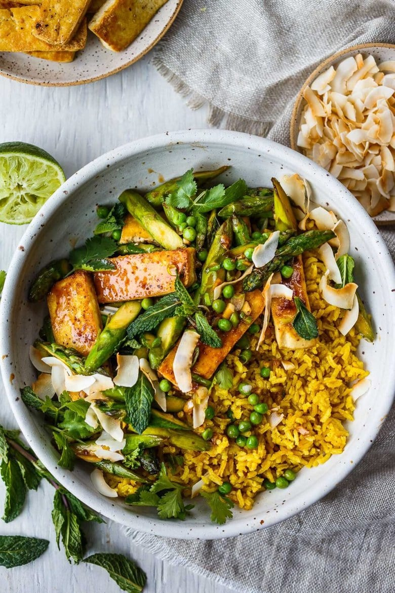

Coconut Rice Bowl

Description
Delicious Coconut Rice Bowls with curried jasmine rice cooked in coconut milk and topped with crispy tofu, seasonal vegetables, fresh cilantro and mint, with toasted coconut flakes.
Vegan!
Ingredients
- Jasmine Rice
- Coconut milk
- Aromatics, Herbs, and Spices: ginger, garlic, lemongrass, cilantro, mint, Yellow Curry Powder
- Protein: tofu
- Vegetables: asparagus, green onions, peas
- Coconut oil
- Sriracha
- Soy Sauce
- Coconut Sugar
- Toasted Coconut Flakes
- Lime Juice
Steps
- Cook the rice: Add rice, coconut milk, water, curry powder, salt, and 1 teaspoon of ginger. Bring to a simmer. And cook for 20 minutes.
- Make the Sauce: Whisk together sriracha, soy sauce, and coconut sugar. Set aside.
- Pat tofu dry and cut into thick strips.
Prep veggies. Here we are using asparagus, but you can swap out for your season favorites.
Cutting the asparagus at an angle with cook it more quickly.
- Sear Tofu (or cook chicken, fish or shrimp if using): Heat a pan to med-high (we like cast iron).
Add 1 tablespoon coconut oil and a sprinkle of salt and pepper. Add tofu and sear for about 3 minutes without moving tofu around, flip over and sear for another 3 minutes. Set tofu aside.
- Sauté Veggies: In the same pan that you cooked the tofu in add 1 tablespoon coconut oil sauté asparagus (or other vegetables) for about 1 minute.
Add garlic, lemongrass, ginger and stir over medium heat for about 3-4 minutes, until asparagus is tender. Add green onions and 1 tablespoon of water, scraping the pan to loosen all the stuck bits, cooking for another minute more.
- Combine: Add tofu, sauce, peas, and lime juice, stirring to combine. Take off the heat.
- Serve: Place rice in the bowls with a scoop of the sautéed tofu and veggies. Liberally sprinkle mint, cilantro and coconut flakes on top.